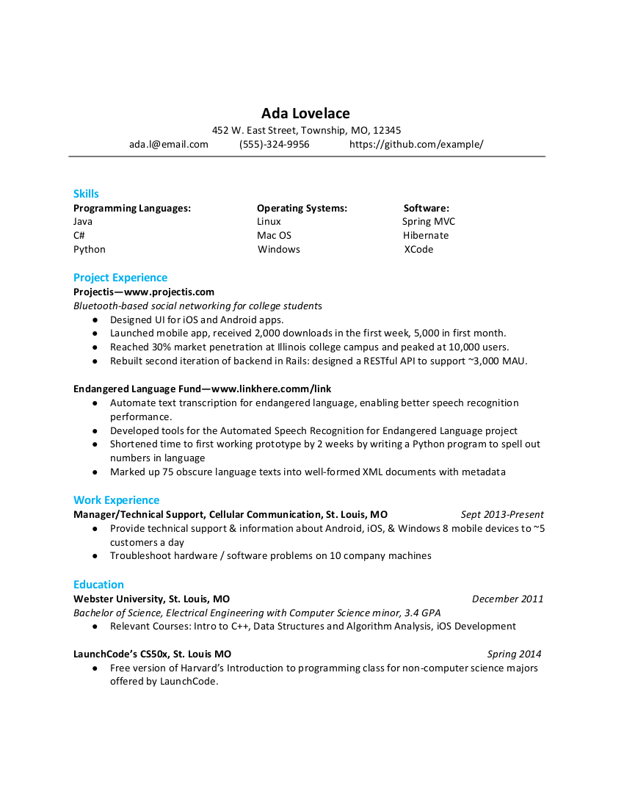

A good resume is a crucial part of your job search. We’re not going to ramble on explaining what a resume is, because it’s a part of the hiring process for most industries. What we will focus on instead is how to create a technical resume that will highlight the skills you bring to a technical position.
Let’s take a look at a resume we created at LaunchCode to demonstrate the format of an ideal technical resume.
When it comes to the format of your resume, you need to quickly summarize your skills, give evidence of those skills, outline your learning journey so far, and then include everything else you would typically include with a resume.
The clearly outlined sections of a technical resume are:
Let’s look at each section in detail.
You must include your first and last name, a phone number where you can be reached, and a professional email address.
A professional email address is some variation of your name. a.lovelace@gmail.com gives a much more professional feeling than fluffytoes32@yahoo.com. If you don’t have an email account for professional communication you should create one. We recommend Gmail for this purpose.
You should also include a link to your Github profile, a link to your LinkedIn, a physical address, and a link to your personal website (if you have one).
After clearly marking your personal information at the top of the page, the next section is to quickly outline your Technical Skills. You should prioritize programming languages, frameworks, and major libraries over operating systems, and software. You should order your skills from most familiar to least familiar. As a final note you should also consider the type of job you are looking for.
For example: I am looking for a Java back end development job.
Technical Skills:
Java, Spring, Hibernate, Thymeleaf, MySQL, Python, Flask, HTML, CSS, JavaScript, and jQuery.
This selection, and order of skills shows my interviewer that I feel strongest with Java, Spring, and MySQL, then I have less familiarity with Python, and Flask (another back end skill set), and finally that have done a little with front end, and am comfortable using those tools – but would need a ramp up to do them exclusively.
Hint
You should not include every language or technology you’ve heard of. You should only include skills you would feel comfortable using to build a project today. You’ve learned the skill, and have some practical experience with the skill. This will usually mean an entry level developer will include fewer than 10 skills on their resume.
After listing the skills you have, you need to back up your skills with some experience you have gained with those skills. You can do this by mentioning Projects you have completed, or by outlining Professional Experience that required the use of those skills. Most of you do not have professional experience yet, but you have completed projects. You will want to include projects that used the skills you mentioned in your Technical Skills section.
Project Experience:
Household Budgeting Web-app -- www.familybudget.com
A web-app that allows users to add members to their household and track incomes and
expenses by categories.
- Java, Spring, Hibernate, Thymeleaf, MySQL, HTML, CSS, and jQuery
- Aside from the budget tracking features, it utilizes Spring Security to allow for
secure authentication to the web server
- github.com/mygithubaccount/family-budget
Blogz
A school project completed in LC101, it allows users to signup, create, and
read blog posts.
- Python, Flask, SQLAlchemy, Jinja, MySQL, and HTML
- Beyond the assigned tasks, I included a feature that allows users to delete,
or edit their owned blog posts
- github.com/mygithubaccount/blogz
Personal Portfolio -- myportfolio.com
A portfolio I am currently building. It will eventually contain links to my other
projects, and document what I am currently learning.
- React, JavaScript, HTML, CSS, and Bootstrap
- I am currently learning React to incorporate into this project
- github.com/mygithubaccount/portfolio
Each project should include:
You should include a live link to your project, if it is online.
You need to show how you learned your technical skills. You can do this by including college courses you have taken, programs you have been a part of, books you have worked through, and MOOC’s you have completed.
Hint
MOOC stands for Massive Open Online Course. This is the majority of your online programs like Udacity, Udemy, EdX, KhanAcademy, etc.
Technical Education:
LC101
- 20 week program that focuses on programming fundamentals, web basics,
and more advanced concepts with Java.
- Curriculum covered: Python, Flask, Jinja2, SQLAlchemy, MySQL,
Java, Spring, Hibernate, and Thymeleaf
- Built multiple in class projects
TeamTreeHouse.com
- Worked through the Java, Spring curriculum of TeamTreeHouse.com
- Skills: Java, Eclipse, Spring, Spring Security, Hibernate, and JDBC.
- Videos to cover concepts, and projects to practice concepts
CS Courses from UMSL
- Completed 4 CS courses from UMSL
- Intro to Java Programming, Java Programming II, Intro to Databases,
and Operating Systems I
After covering your technical experiences you still need to include your non-technical work experience.
Work Experience:
Assistant Manager, Upper Limits (May 2010 - July 2012)
- Day to day operations of a rock climbing gym, tending register,
performing safety inspections, assisting customers, cleaning
- Worked with Managers to plan, and run special events including
birthday parties, Corporate Team Building, Climbing Competitions
- Taught Rock Gym 101 - teaching novice climbers about top rope
climbing, both how to, and necessary safety precautions
Manager/Technical Support, Cellular Communication (August 2012 - current)
- Provide technical support & information about mobile devices
- Troubleshoot hardware / software problems for customers,
and in-house computers
This section can be quite long, depending on the jobs you have had so far. You should try to include as much of it as possible, but focusing primarily on your experiences with problem solving, learning new things on the job, and working with others.
If you have any other formal education you didn’t include in the Technical Education section, you still need to include as it provides invaluable information about you.
Education:
Webster University, St. Louis, MO
Bachelor of Arts, History with a German minor
Your resume should not be longer than two pages! If it is longer than two pages, try to eliminate sections from your non-technical education or non-technical work experience. If you are still short for room, try reducing the number of bullet points for each item of your resume. Again, you want to focus on showing them your problem solving skills.
Some people like to have a master resume that contains all of the experience, education, skills, and projects they have ever worked on. This a great thing to have for yourself, but when you are sending a professional resume, you don’t want it to be longer than two pages.